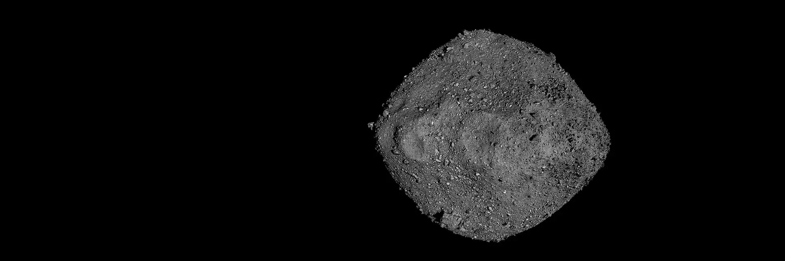
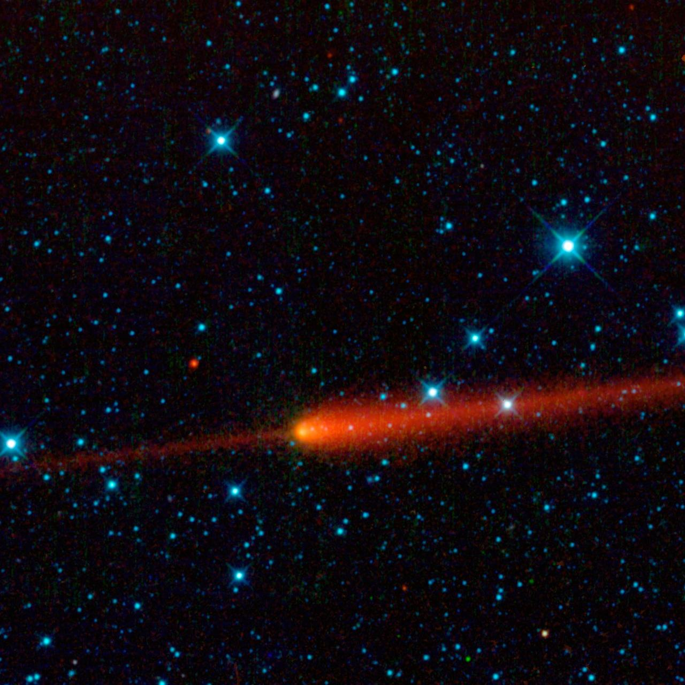
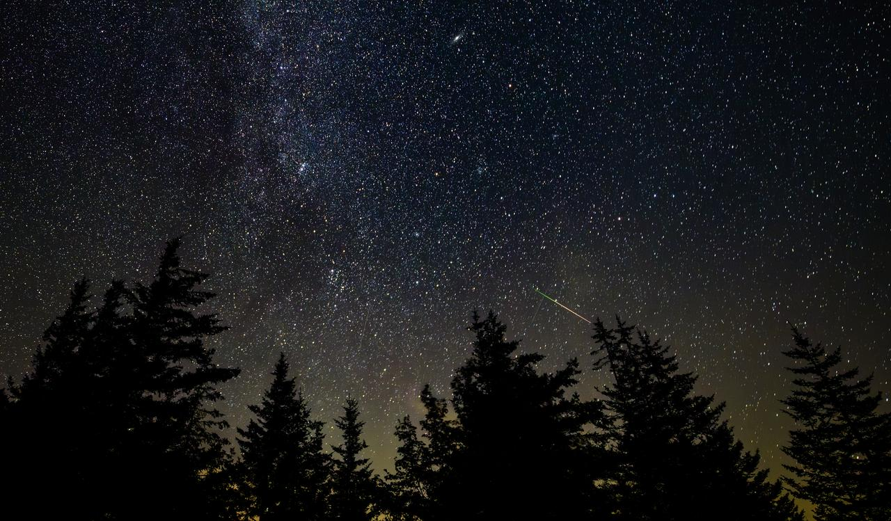

Asteroitler, Güneş’in etrafında dolanan görece küçük, çoğunlukla kayalık ve metalik cisimlerdir.
Büyük bölümü Mars ile Jüpiter arasındaki ana asteroit kuşağında bulunur.
Bazı asteroitlerin yörüngeleri Dünya’ya yaklaşabilir. Asteroitlerin farklı türleri vardır;
bazıları ağırlıklı olarak kayalık, bazıları ise metal bakımından zengindir.
Asteroitler, yaklaşık 4,6 milyar yıl önce Güneş Sistemi oluşurken geride kalan malzemelerden oluşmuştur.

Görsel: NASAKuyruklu yıldızlar buz, toz ve kayaçlardan oluşan gök cisimleridir. Güneş’e yaklaştıklarında ısınırlar.
İçlerindeki buzlar gaz hâline geçebilir. Bu süreç sonucunda kuyruklu yıldızın çevresinde koma adı verilen gaz ve toz bulutu oluşabilir.
Güneş rüzgârı ve diğer etkiler nedeniyle kuyruklu yıldızlarda uzun bir kuyruk görülebilir.

Görsel: NASAUzayda bulunan küçük kaya ve toz parçalarına meteoroid denir.
Bir meteoroid Dünya’nın atmosferine yüksek hızla girdiğinde sürtünmeden dolayı yanar ve arkasında parlayan bir iz bırakır;
ortaya çıkan bu ışık olayına meteor denir. Halk arasında buna “kayan yıldız” denir ama aslında yıldız değildir.
Atmosferde tamamen yok olmayıp yeryüzüne ulaşan meteoroid parçalarına ise meteorit (gök taşı) denir.
Dünya, Güneş etrafındaki yörüngesinde ilerlerken bazı kuyruklu yıldızların bıraktığı parçacıkların bulunduğu bölgelerden geçebilir.
Bu parçacıklar atmosfere girdiğinde çok sayıda meteor görülebilir; bu olaya meteoryağmuru denir.
Yani meteor yağmurlarının oluşmasında kuyruklu yıldızlardan kopan parçacıkların önemli bir rolü vardır.

Görsel: NASA